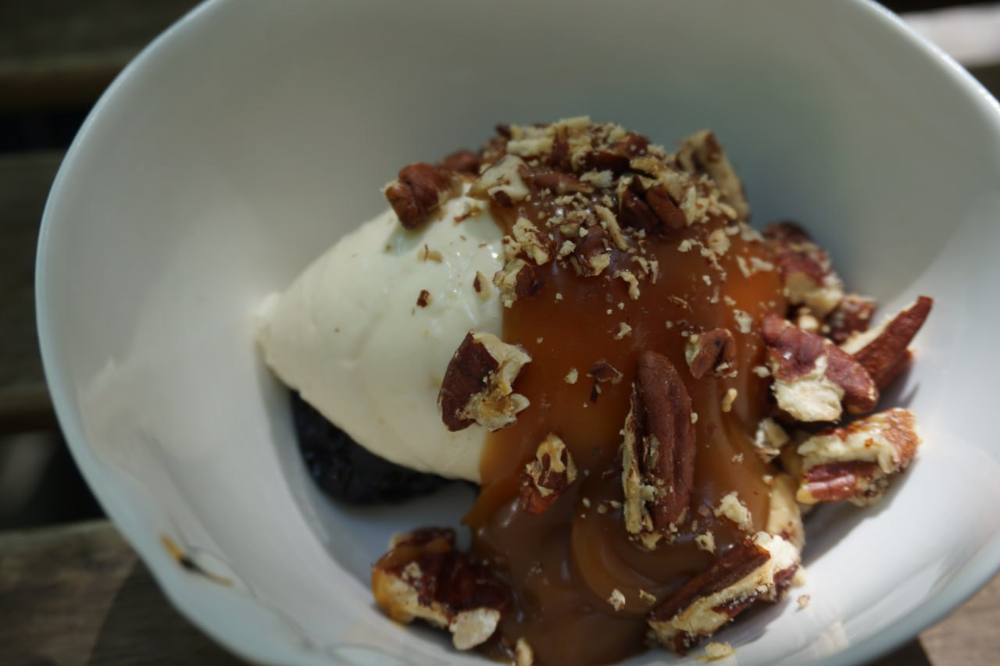

приготовление:
-
Чернослив: взять по 5–8 черносливинок на порцию. Замочить их в горячей воде на 10–15 минут, затем обсушить. При желании можно замочить чернослив вместо воды в алкоголе (роме, коньяке или ликёре) для более насыщенного вкуса.
-
Лёгкий мусс из маскарпоне: Взбить 70 мл сливок до мягких пиков. В отдельной миске смешать 100 г маскарпоне, 50 г греческого йогурта, 1 ст. л. сахарной пудры и 1 ч. л. ванильного экстракта венчиком или миксером на низкой скорости до однородной лёгкой массы. Аккуратно ввести сливки в маскарпоне-йогуртовую смесь, перемешивая лопаткой снизу вверх, чтобы сохранить воздушность.
-
Орехи пекан: можно использовать как есть или слегка обжарить на сухой сковороде 5 минут, постоянно помешивая. При желании при обжарке добавить немного кокосового масла и 1 ч. л. кленового сиропа — получится лёгкий карамельный вкус.
-
Сборка десерта: на дно тарелки или креманки выложить подготовленный чернослив (можно нарезать или оставить целиком). Сверху добавить щедрую ложку мусса из маскарпоне. Полить солёной карамелью или выложить ложку, если она густая. Посыпать крупно порубленными орехами пекан.